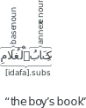

Not ready for study.
12 Annexation
12.1 Introduction
Consider the following expression:
“the boy’s book”
This expression establishes a relation of belonging between the two nouns: (i) “the boy”, and (ii) “the book”. It says that the book belongs to the boy.
Arabic expresses this meaning using a construction called annexation. In this chapter we will learn about this construction.
12.2 Forming the annexation
The word “annexation” means the addition of a new annexed item to an existing base item. We use the term annexation in Arabic grammar when an annexe noun is annexed to a base noun by being placed right before it. Here is an example of an annexation:
The annexation construction consists of two nouns:
- The annexe noun: This is the first noun in the annexation.
- The base noun: This is the second noun in the annexation.
The annexe noun كِتَاب is annexed to, and belongs to, the base noun ٱَلْغُلَام. You can use the alphabetical order (A, B) to help you remember that the annexe noun comes before the base noun.
12.3 State of the annexe noun and base noun
The base noun in an annexation is always in the i-state. The annexe noun may be in any state, depending on its function in the sentence. For example,
كِتَابُ ٱلْغُلَامِ ثَقِيلٌ.
“The boy’s book is heavy.”
(The annexe noun is in the u-state.)
أَخَذَتِ ٱلْجَارِيَةُ كِتَابَ ٱلْغُلَامِ.
“The girl took the boy’s book.”
(The annexe noun is in the a-state.)
كَتَبَ ٱلْمُعَلِّمُ فِي كِتَابِ ٱلْغُلَامِ.
“The teacherm wrote in the boy’s book.”
(The annexe noun is in the i-state.)
12.4 Definiteness of the annexation
Consider again the annexation expression we have been using so far:
كِتَابُ ٱلْغُلَامِ
“the boy’s book”
The base noun ٱَلْغُلَام is definite because it is prefixed by ٱَلْ “the”. Therefore we have translated it as “the boy”. The annexe noun كِتَاب is not made definite by ٱَلْ. Nor is it made indefinite by tanwīn. Rather, its definiteness is determined by the base noun. Because the base noun ٱَلْغُلَام is definite, therefore the annexe noun كِتَاب is also definite. The entire annexation is definite.
Consider now the case when the base noun is indefinite.
كِتَابُ غُلَامٍ
“a boy’s book”
In the above example, the base noun غُلَامٍ is indefinite because it is tanwīned and because it does not prefixed by ٱَلْ. Therefore we have translated it as “a boy”. The annexe noun كِتَاب is neither tanwīned, nor does it have ٱَلْ. Its definiteness is, again, determined by the base noun. Because the base noun غُلَامٍ is indefinite, therefore the annexe noun كِتَاب is also indefinite. The entire annexation is indefinite.
We will see soon, if Allāh wills, why the definiteness of the annexe noun is important.
Here are some examples of definite and indefinite annexations.
لَبِسَ ٱلطِّفْلُ قَمِيصَ رَجُلٍ.
“The child wore a man’s shirt.”
أَخَذَ أَمِيرُ ٱلْجَيْشِ رَايَةَ ٱلْمَلِكِ وَرَفَعَهَا.
“The army’s commander took the king’s flag and raised it.”
جَلَسَ ٱلرَّجُلُ فِي ظِلِّ شَجَرَةٍ.
“The man sat in a tree’s shade.”
12.4.1 Translating the annexation using “of”
So far we have been using the English “’s” to translate the Arabic annexation. Examples:
بَيْتُ رَجُلٍ
“a man’s house”
بَيْتُ ٱلرَّجُلِ
“the man’s house”
Instead of using “’s” we may use “of” as well. For example:
بَيْتُ رَجُلٍ
“a/the house of a man”
بَيْتُ ٱلرَّجُلِ
“a/the house of the man”
Note that the annexe noun “house” may be prefixed with either “a” or “the”. This will depend on what is more natural in English. Often time both will fit. Here are some examples:
لَبِسَ ٱلطِّفْلُ قَمِيصَ رَجُلٍ.
“The child wore a/the shirt of a man.”
أَخَذَ أَمِيرُ ٱلْجَيْشِ رَايَةَ ٱلْمَلِكِ وَرَفَعَهَا.
“The commander of the army took the flag of the king and raised it.”
جَلَسَ ٱلرَّجُلُ فِي ظِلِّ شَجَرَةٍ.
“The man sat in the shade of a tree.”
فَتَحَ ٱللِّصُّ شُبَّاكَ ٱلْبَيْتِ وَدَخَلَ ٱلْبَيْتَ.
“The thief opened a/the window of the house and entered the house.”
It is important to understand that translating the annexe noun into English with “a” or “the” is purely for the reason of obtaining a natural translation. This does not affect whether or not the annexe noun is grammatically considered definite in Arabic.
As we mentioned earlier, the definiteness of the annexe noun in Arabic depends only on the definiteness of the base noun. If the base noun is definite then the annexe noun shall be considered definite as well. And if the base noun is indefinite then the annexe noun shall be considered indefinite as well.
The need to maintain this distinction will become apparent in the next section.
If the base noun is definite, and it is desired to make the annexe noun grammatically indefinite, then it is necassary to break the annexation, and use a prepositional phrase instead, usually with the preposition لِ, which, here, will mean “of”. Example:
ذَهَبَ ٱلْغُلَامُ إِلَىٰ بَيْتٍ لِلرَّجُلِ.
“The boy went to a house of the man.”
فَتَحَ ٱللِّصُّ شُبَّاكًّا مِنَ ٱلْبَيْتِ وَدَخَلَ ٱلْبَيْتَ.
“The thief opened a window of the house and entered the house.”
12.5 Broken plurals and āt sound plurals in annexations {#broken-plurals-and-at-sound-plurals-in-annexations}
There is no special rules for broken plurals and āt sound plurals in annexations. They behave just like singular nouns. Remember only that āt plurals end with ◌ٍ and ◌ِ in the a-state. Here are some examples:
حَيَوَانَاتُ ٱلْغَابَةِ وَحْشَةٌ.
“The animals of the forest are wild.”
قَرَأَتْ طَالِبَاتُ ٱلْمَدْرَسَةِ صَفَحَاتِ ٱلْكُتُبِ
“The school’s studentsf read the pages of the books.”
فِي ٱلْخِزَانَةِ أَقْلَامُ مُعَلِّمَاتٍ.
“In the cupboard are teachers’f pens.
Contrary to broken plurals and āt plurals, duals and ūn sound plurals behave differently in annexations. We will deal with them in section @ref(duals-and-sound-un-plurals-in-annexations)
12.6 Describers in an annexation
12.6.1 Describing the base noun
Consider the following expression:
كِتَابُ ٱلْجَارِيَةِ
“the girl’s book”
Now say that we want to form an descriptive noun-phrase “the small girl’s book”. Basically, we want to describe the base noun ٱَلْجَارِيَة “the girl” with the adjectival noun صَغِير “a small one”. Here is how we will express this in Arabic:
كِتَابُ ٱلْجَارِيَةِ ٱلصَّغِيرَةِ
“the small girl’s book”
In the manner we are already familiar with, we place the describer صَغِير “a small one” after the describee ٱَلْجَارِيَة “the girl” and match the describer with the describee in definiteness, state, gender and number (singular, dual, or plural).
Similarly, if we had an indefinite annexation, we would get:
كِتَابُ جَارِيَةٍِ صَغِيرَةٍ
“a small girl’s book”
Here are some more examples:
لَعِبَتِ ٱلْجَارِيَةُ فِي حَدِيقَةِ ٱلْبَيْتِ ٱلْكَبِيرِ.
“The girl played in the garden of the big house.”
قَرَأَ ٱلْغُلَامُ سُورَةَ ٱلْقُرْآنِ ٱلْكَرِيمِ.
“The boy read the sūrah of the Noble Qurʾān.”
جَلَسَ ٱلرَّجُلُ فِي ظِلِّ شَجَرَةٍ عَرِيضَةٍ وَسِيعَةٍ.
“The man sat in the shade of a wide broad tree.”
12.6.2 Describing the annexe noun
Consider, again, the same annexation:
كِتَابُ ٱلْجَارِيَةِ
“the girl’s book”
Say, now, that we want to describe the annexe noun كِتَاب “book” with the adjectival noun صَغِير “a small one”. Normally, nothing can come between the annexe noun and the base noun in an annexation. So, the describer needs to be placed, again, after the base noun. However, this time it will match the annexe noun, not the base noun, in state, definiteness, gender, and number. So we get:
كِتَابُ ٱلْجَارِيَةِ ٱلصَّغِيرُ
“the girl’s small book”
Note how the describer ٱَلصَّغِيرُ matches the annexe noun كِتَابُ in state and gender. Note also how the describer is definite with an ٱَلْ. This is because it is matching the annexe noun كِتَابُ in definiteness. The annexe noun كِتَاب is definite, not with ٱَلْ, but rather because of the definite base noun ٱَلْجَارِيَةِ “the girl”. We’ve already learned this rule in section @ref(definiteness-of-the-annexation) above.
Similarly, if we describe the annexe noun كِتَاب in an indefinite annexation, we get:
كِتَابُ جَارِيَةٍ صَغِيرٌ
“a girl’s small book”
This time the describer صَغِيرٌ is indefinite with a tanwīned ḍammah ◌ٌ. This is because the annexe noun كِتَابُ is indefinite. It is indefinite because base noun جَارِيَةٍ “a girl” is indefinite.
Now, you might be foreseeing a problem. What if the annexe noun and the base noun have the same gender, and the annexe noun too is in the i-state? For example, in the sentence:
ذَهَبَ ٱلْغُلَامُ إِلَىٰ بَيْتِ ٱلرَّجُلِ ٱلْكَبِيرِ.
“The boy went to the big/old man’s house.”
or
“The boy went to the man’s big house.”
How do we know whether the describer كَبِير is meant to describe the annexe noun بَيْتِ or the base noun ٱَلرَّجُل? The annexe noun بَيْتِ and the base noun ٱَلرَّجُل are both masculine, singular, definite, and in the i-state.
The answer is that in such cases, context will have to be clear to tell us which of the two meanings is intended. If the context makes it clear then there is no harm in using such a sentence for either of the two meanings.
Also, sometimes, the meaning of the describer is such that it will likely apply to only one of the two nouns. For example,
ذَهَبَ ٱلْغُلَامُ إِلَىٰ بَيْتِ ٱلرَّجُلِ ٱلْكَرِيمِ.
“The boy went to a noble/generous man’s house.”
In the sentence above the describer كَرِيم “noble/generous” is likely to apply to a man, and not to a house.
If, however, the context is not clear, and the meaning of the describer can apply to both the annexe noun and the base noun, then the describer is likely to apply to the base noun and not to the annexe noun. So then, this interpretation is more likely:
ذَهَبَ ٱلْغُلَامُ إِلَىٰ بَيْتِ ٱلرَّجُلِ ٱلْكَبِيرِ.
“The boy went to the big/old man’s house.”
In order to apply a describer to the annexe noun in such a case, it is better to break the annexation and form a prepositional phrase instead, usually with the preposition لِ, which, here, will mean “of”. Example:
ذَهَبَ ٱلْغُلَامُ إِلَىٰ ٱلْبَيْتِ ٱلْكَبِيرِ لِلرَّجُلِ .
“The boy went to the big house of the man.”
Here are some more examples:
لَعِبَتِ ٱلْجَارِيَةُ بِكُرَةِ ٱلْغُلَامِ ٱلْحَمرَاءِ.
“The girl played with the boy’s red ball.”
(Note that حَمْرَاء feminine to match كُرَة.)
سَقَطَتْ وَرَقَةُ ٱلشَّجَرَةِ ٱلْخَضْرَاءُ عَلَىٰ مَاءِ ٱلنَّعْرِ ٱلْعَرِيضِ.
“The green leaf of the tree fell on the water of the broad river.”
(Note that خَضْرَاء is in the u-state to match وَرَقَة)
حَمَلَ ٱلْغُلَامُ حَقِيبَةَ ٱلْمَدْرَسَةِ ٱلثَّقِيلَةَ.
“The boy carried the heavy school-bag.”
(literally: the heavy bag of the school).
كَتَبَ ٱلرَّجُلُ عَلَىٰ صَفْحَةِ كِتَابٍ بَيْضَاءَ.
“The man wrote on the white page of a book.”
(Note that بَيْضَاءَ is feminine to match صَفْحَة. However, also note that it has an a-mark ◌َ in the i-state because it is semi-flexible.)
12.7 Semi-flexible nouns in an annexation
Remember that semi-flexible nouns are not tanwīned and that when indefinite, their i-state is indicated by an fat·ḥah ◌َ. But when definite with ٱَلْ then they behave just like fully-flexible nouns. Example of the semi-flexible noun 2صَحْرَاء “a desert”:
| State | Indefinite | Definite |
|---|---|---|
| u-state | صَحْرَاءُ | ٱَلصَّحْرَاءُ |
| a-state | صَحْرَاءَ | ٱَلصَّحْرَاءَ |
| i-state | صَحْرَاءَ | ٱَلصَّحْرَاءِ |
We will now see how semi-flexible nouns behave in an annexation.
12.7.1 A semi-flexible noun as the base noun
Here are examples of the semi-flexible noun 2صَحْرَاء “a desert” as the base noun in an annexation:
ٱَلْقَرْيَةُ فِي وَسَطِ ٱلصَّحْرَاءِ.
“The village is in the middle of the desert.”
شَرِبَ ٱلْأَعْرَابِيُّ مَاءً مِنْ بِئْرِ صَحْرَاءَ.
“The bedouin drank some water from a desert’s well.”
As you can see, when 2صَحْرَاء is definite, then its i-state is indicate by an kasrah ◌ِ, just like fully-flexible nouns. However, when it is indefinite, then its i-state is indicate by an fat·ḥah ◌َ.
This is consistent with the general behavior of semi-flexible nouns that we are familiar with.
12.7.2 A semi-flexible noun as the annexe noun
Contrary from expected behavior, a semi-flexible annexe noun, even when indefinite, takes an kasrah ◌ِ in the i-state instead of an fat·ḥah ◌َ. Example,
قَدِمَ ٱلْأَعْرَابِيُّ مِنْ صَحْرَاءِ أَرْضٍ بَعِيدَةٍ.
“The bedouin came from the desert of a far land.”
In the above example, 2صَحْرَاء “a desert” is indefinite because it is the annexe noun to an indefinite base noun أَرْض “a land”. It is in the i-state because it is preceded by the preposition مِنْ “from”. Nevertheless, it takes an kasrah مِنْ صَحْرَاءِ أَرْضٍ, not an fat·ḥah, which would be incorrect: \(\times\) مِنْ صَحْرَاءَ أَرْضٍ.
12.8 Annexations with more than two nouns
So far we have seen annexations with two nouns. Annexations may be arbitrarily long. Here is an example of a noun-chain with more than two nouns:
The above annexation consists of three nouns. It may be divided into two sub-annexations:
- مِفْتَاحُ بَابِ “door’s key”. Its annexe noun \(a_1\) is مِفْتَاح and its base noun \(b_1\) is بَابِ.
- بَابِ ٱلْبَيْتِ “the house’s door”. Its annexe noun \(a_2\) is بَابِ and its base noun \(b_2\) is ٱلْبَيْتِ.
The noun بَاب “door” is common to both sub-annexations. It is the base noun of the first sub-annexation مِفْتَاحُ بَابِ “door’s key”. At the same time, it is also the annexe noun of the second sub-annexation بَابِ ٱلْبَيْتِ “the house’s door”.
Only the final base noun may have ٱَلْ or be tanwīned. If the final base noun has ٱَلْ (as above) then all the nouns in the annexation are definite.
And if the final base noun is indefinite, as in the example below, then all the nouns in the annexation are indefinite.
مِفْتَاحُ بَابِ بَيْتٍ
“a house’s door’s key”
All the nouns except the first annexe noun must be in the i-state. Consistent with section @ref(a-semi-flexible-noun-as-the-annexe-noun) if a semi-flexible noun is any of the annexe nouns and is in the i-state, then its i-state is indicated by an fat·ḥah ◌َ. Example:
مِنْ بِئْرِ صَحْرَاءِ أَرْضٍ
“from the well of the desert of a land”
12.9 Pronouns as base nouns
Consider the expression:
“his book”
This expression is very similar to the annexation:
كِتَابُ ٱلْغُلَامِ
“the boy’s book”
The difference is that we would like to replace the base noun ٱَلْغُلَام “the boy” with the pronoun “his”. For this we use the attached pronoun هُ. When we place this pronoun as the base noun, we get:
كِتَابُهُ
“his book”
This annexation follows the same rules as the other annexations we have been studying so far:
- The annexe noun may be in any state, depending on its function in the sentence.
- The base noun is in the i-state. But because the base noun is a pronoun, and pronouns are rigid nouns (see section @ref(rigidity-of-pronouns) that don’t change their ending based on their state, therefore it’s i-state will not be apparent.
Here are some examples of this annexation used in sentences:
كِتَابُهُ ثَقِيلٌ.
“His book is heavy”
قَرَأَ ٱلرَّجُلُ كِتَابَهُ.
“The man read his book.”
كَتَبَ ٱلْمُعَلِّمُ فِي كِتَابهِ.
“The teacherm wrote in his book.”
If the annexe noun ends with ة then it is converted to a ت when annexing it to an attached pronoun. For example:
ذَهَبُوا إِلَىٰ مَدْرَسَتِهِمْ.
“They went to their school.”
Here are some more examples of annexing to the different attached pronouns:
دَخَلْتَ بَيْتَكَ.
“You1,m entered your1,m house.”
أَكَلَتَا طَعَامَهُمَا.
“They2,f ate their2 food.”
قَدِمْتُ إِلَىٰ مَدِينَتِكُمْ
“I have arrived to your3,m city.”
هُوَ إِمَامُ مَسْجِدِنَا.
“He is the ʾ#imām of our mosque.”
If the annexe noun is semi-flexible then it gets a ◌ِ in the i-state, as we’ve already learned. Example with the semi-flexible broken plural 2حَدَائِق “gardens”.
لَعِبْنَ فِي حَدَائِقِهِنَّ.
“They3,f played in their3,f gardens.”
If an annexe noun ends with ىٰ then it gets converted to an alif when annexing it to an attached pronoun. Example with 2فَتَاوَىٰ “legal opinions”:
كَتَبَ تَلَامِذَةُ ٱلشَّيْخِ فَتَاوَاهُ فِي كُتُبِهِمْ.
“The pupils of the religious scholar wrote down his legal opinions in their books.”
For the singular speaker-participant there are two variants for the attached pronoun:
- ي -ī
- يَ -ya
The first (ي -ī) is more commonly used. Example:
قَرَأْتُ كِتَابِي
“I read my book.”
أَقْلَامِي قَصِيرَة.
“My pens are short.”
If, however, the annexe noun ends in a long vowel or a semi-vowel then (ي -ī) is disallowed and only (يَ -ya) shall be used. Example with the semi-flexible broken plural 2هَدَايَا “gifts”:
أَعْجَبَتْهُمْ هَدَايَايَ.
“My gifts pleased them.”
12.9.1 Describers with annexations to pronouns
Consider the annexation:
كِتَابُهُ
“his book”
The annexe noun is كِتَاب and the base noun is the pronoun ه. We would like add a describer to this expression. Remember from section @ref(definiteness-of-pronouns) that pronouns are definite nouns. That makes the annexe noun كِتَاب also definite. Therefore, any describer for this annexation will need to be definite too.
Here is a new rule: Pronouns may not be describees. That is: they are not allowed to have describers. Even in English you may say:
“The good boy went.”
but you can’t say:
\(\times\) “The good he went.”
So, any describers for the annexation must necessarily only describe the annexe noun, not the base pronoun. Example:
كِتَابُهُ الأَحْمَرُ
“his red book”
Here are some more examples:
كَتَبْتُ بِقَلَمِيَ ٱلْأَسْوَدِ
“I wrote with my black pen.”
حَمَلَ غِلْمَانُ ٱلْقَرْيَةِ حَقَائبَهُمُ ٱلثَّقِيلَة إِلَىٰ مَدْرَسَتِهِمُ ٱلْبَعِيدَةِ.
“The village boys carried their heavy bags to their distant school.”
(literally: the village’s boys.)
12.10 Duals and ūn sound plurals in annexations {#duals-and-sound-un-plurals-in-annexations}
We have already dealt with broken plurals and āt sound plurals in annexations in section @ref(broken-plurals-and-at-sound-plurals-in-annexations).
In this section we will deal with duals and ūn sound plurals in annexations.
12.10.1 Duals and ūn sound plurals as base nouns
As base noun, duals and ūn sound plurals behave no differently than other nouns. Being base nouns they will be in the i-state and this shall be indicated by:
- ◌َيْنِ -ayni for duals
- ◌ِينَ -īna for ūn sound plurals
Here are some examples:
لَجِئَ ٱلْمَظْلُومُنَ ٱلضُّعَفَاءُ فِي بِلَادِ ٱلْمُسْلِمِينَ ٱلْآمِنَةِ.
“The weak wronged ones took refuge in the secure lands of the Muslims.”
أُخُتُ ٱلْغُلَامَيْنِ ٱلطَّوِيلَيْنِ صَغِيرَةِ.
“The tall boys’2 sister is little.”
هِيَ طَالِبَةُ مُعَلِّمَتَيْنِ كَرِيمَتَيْنِ.
“She is the studentf of noble teachers2,f.”
12.10.2 Duals and ūn sound plurals as annexe nouns
When duals and ūn sound plurals are annexe nouns, then their final ن is treated as a sort of tanwīn and is, therefore, deleted before annexing them to a base noun. For example:
بَيْتَا ٱلرَّجُلِ
“the man’s houses2”
not
\(\times\) بَيْتَانِ ٱلرَّجُلِ
Note, also, that because the base noun ٱَلرَّجُلِ begins with a connecting hamzah ٱ, therefore the long vowel ā at the end of بَيْتَا is pronounced as a short vowel a, thus:
bayta -rrajuli
not
\(\times\) baytā -rrajuli
If the dual annexe noun were in the i-state then the final ي gets an kasrah ◌ِ if there is following connecting hamzah. Example:
قَرَأْتُ كِتَابَيِ ٱلرَّجُلِ.
qaraʾtu kitābayi -rrajul
“I read the man’s books2.”
Here are some more examples including ūn sound plurals:
مُعَلِّمُو ٱلْغُلَامِ كِرَامٌ.
muɛallimu -lg͡hulāmi kirām.
“The boy’s teachers3 are noble.”
(Note that there is no silent alif after مُعَلِّمُو as there is after a verb with a plural absentee-participant doer pronoun, e.g. لَعِبُوا “they3,m played”)
لَعِبَ ٱبْنَا ٱلرَّجُلِ مَعَ لَاعِبِي مَدِينَتِهِمْ.
laɛiba -bna -rrajuli maɛa lāɛibī madīnatihim.
“The man’s sons2 played with the players of their city.”
12.10.2.1 Annexing duals and ūn sound plurals to pronouns
Duals and ūn sound plurals can be annexed to attached pronouns, and in this case too, they will lose their final ن. Examples:
مُعَلِّمُونَا طَيِّبُونَ.
“Our teachers3,m are good.”
لَعِبَتِ ٱلْجَارِيَةُ مَعَ صَدِيقَتَيْهَا
“The girl played with her friends2,f.”
بَيْتَايَ كَبِيرَانِ.
“My houses2 are big.”
(Note that only the يَ variant is allowed to be used because of بَيْتَا ending with a long vowel.)
قَرَأْتُ كِتَابَيَّ
(Note how كِتَابَيْ + يَ becomes كِتَابَيَّ.)
There are also two special cases in this category and we will examine them below:
Annexing an ūn sound plural to the singular speaker participant pronoun
When an ūn sound plural is annexed to the singular speaker participant pronoun, then again, only the يَ variant can be used. However, in addition, the expression will appear the same regardless of the state of the annexe noun. So for all states (u-state, a-state, and i-state), we will get:
مُعَلِّمِيَّ
We don’t say \(\times\) مُعَلِّمُويَ for the u-state. Examples:
مُعَلِّمِيَّ كِرَامٌ.
“My teachers3,m are noble.”
(u-state)
سَأَلْتُ مُعَلِّمِيَّ
“I asked my teachers3,m.”
(a-state)
أَخَذْتُ كِتَابًا مِنْ مُعَلِّمِيَّ
“I took a book from my teachers3,m.”
(i-state)
Annexing an dual noun to a dual pronoun
When a dual noun is to be annexed to a dual pronoun, then the dual annexe noun is often converted to a plural. For example, instead of saying
نَظَرْتُ إِلَىٰ رَأْسَيْهِمَا “I looked at their2 heads2.”
it is in fact, more common, to say
نَظَرْتُ إِلَىٰ رُؤُوسِهِمَا “I looked at their2 heads3.”
Although the former is also correct. This is because the annexation of a dual to a dual is considered burdensome upon the tongue to utter, and so the plural is prefered.
12.11 Annexations with “and”
12.11.1 Multiple annexe nouns and one base noun
In English we can have an expression like “the pen and the book of the boy” = “the boy’s pen and book”. In this sentence there are two annexe nouns and one base noun.
In order to express this in Arabic, we will say:
قَلَمُ ٱلْغُلَامِ وَكِتَابُهُ
qalamu -lg͡hulāmi wakitābuhu
“the boy’s pen and his book” = “the boy’s pen and book”
Note that the annexation is not broken by the insertion of وَ wa “and”. Rather a second annexation is used and the two are separated by وَ wa “and”. This is the preferred way of expressing such expressions.
There is another, less preferred way of expressing this. And this is by breaking the first annexation and inserting وَ wa “and”:
قَلَمُ وَكِتَابُ ٱلْغُلَامِ
qalamu wakitābu -lg͡hulāmi
“the boy’s pen and book”
This second method is not considered as eloquent. Some even consider it incorrect. So we advise you to use the first method whenever possible.
12.11.1.1 With pronouns
If the base noun in the first annexation is replaced with a pronoun then only the first method is allowed. For example,
قَلَمُهُ وَكِتَابُهُ
qalamuhu wakitābuhu
“his pen and his book”
12.11.2 One annexe noun and multiple base nouns
We can also have expressions like “the house of the boy and the girl”. In this sentence there is one annexe noun and two base nouns.
To express this in Arabic we will say:
بَيْتُ ٱلْغُلَامِ وَٱلْجَارِيَةِ
baytu -lg͡hulāmi wa-ljāriyati
“the house of the boy and the girl”
Note that both ٱلْغُلَامِ ʾalg͡hulāmi and ٱَلْجَارِيَةِ ʾaljāriyati are in the i-state because they are both base nouns in the annexation.
12.11.2.1 With pronouns
If one or both of the base nouns in the annexation is replaced with a pronoun then the first noun must be repeated. For example,
بَيْتُ ٱلْغُلَامِ وَبَيْتُهَا
“the boy’s house and her house”
بَيْتُهُ وَبَيْتُهَا
baytuhu wabaytuhā
“his house and her house”
12.12 Annexation to a sentence
So far we have studied the annexation of an annexe noun to a base noun. It is also possible to have an annnexation where the base noun is replaced by a sentence or a clause. For example,
The word يَوْم is the annexe noun and is used as an adverb or time. The entire sentence خَرَجْنَا مِنَ ٱلْمَدِينَةِ. occupies the place of the base noun. We will study the adverb of time in chapter (give ref), if Allāh wills, where such annexations are common.
Annexation to a sentence also occurs besides adverbs.1 For another example, see section (ref to idaafah to a أن يفعلَ).
12.13 Numbers from one to ten
Arabic numbers are complicated and we will treat them more fully in chapter (give ref), if Allāh wills. For now, we will give a short preview of the numbers from one to ten.
12.13.1 The number one
The word for the number “one” is وَاحِد wāḥid. It is an adjectival noun and can be used as a describer. For example,
قَرَأْتُ كِتَابًا وَاحِدًا.
“I read one book.”
As usual, when the described noun is feminine, then the describer too وَاحِد is feminized:
أَكَلْتُ تَمْرَةً وَاحِدَةً.
“I ate one date.”
Often, as in English, using the number وَاحِد “one” is optional. For example,
قَرَأْتُ كِتَابً.
“I read a book.”
12.13.2 The number two
The number for “one” وَاحِد is a singular noun. Correspondingly, the number for “two” ٱثْنَانِ it͡hnāni is a dual noun. It too can be used as describer. For example,
دَخَلَ رَجْلَانِ ٱثْنَانِ.
dak͡hala rajulāni -t͡hnān
“Two men entered.”
In the the a- and i-states, it becomes ٱثْنَيْنِ it͡hnayni. For example,
قَرَأْتُ كِتَابَيْنِ ٱثْنَيْنِ.
qaraʾtu kitābayni -t͡hnayn
“I read two books.”
When feminized it becomes ٱثْنَتَانِ it͡hnatāni. For example,
دَخَلَتْ جَارِيَتَانِ ٱثْنَتَانِ وَأَكَلَتَا تَمْرَتَيْنِ ٱثْنَتَيْنِ.
dak͡hala jāriyatāni -t͡hnatāni waʾakalatā tamratayni -t͡hnatayn.
“Two girls entered and ate two dates.”
As with وَاحِد “one”, the use of the number two is optional because its meaning is inherent in the dual. For example,
دَخَلَتْ جَارِيَتَانِ وَأَكَلَتَا تَمْرَتَيْنِ.
dak͡hala jāriyatāni waʾakalatā tamratayn.
“Two girls entered and ate two dates.”
12.13.3 The numbers from three to ten
We saw that the number وَاحِد “one” is a singular noun, and that the number ٱثْنَانِ it͡hnāni “two” is a dual noun.
So it should come as no surprise that the numbers three to ten are treated as plural nouns. (We say treated as plurals because they’re not technically plurals. For example, they don’t conform to the broken plural patterns. But let’s not worry about that for now.)
Now, remember that ة is a feminine marker for singular nouns, but not for plural nouns. In fact, recall that there is almost a role reversal for ة in plural nouns, where it tends to occur for plurals of masculine nouns, and is missing for plurals of feminine nouns. For example, the plural of هِرّ “a male cat” is هِرَرَة, and the plural of هِرَّة “a female cat” is هِرَر, We will now see this role reversal of ة in the numbers three to ten. When a number from 3–10 is used for a masculine noun then it shall have ة and when it is used for a feminine noun then it shall not have ة. Here then are the numbers from 3–10:
| Number | Masculine | Feminine |
|---|---|---|
| three | ثَلَاثَة | ثَلَاث |
| four | أَرْبَعَة | أَرْبَع |
| five | خَمْسَة | خَمْس |
| six | سِتَّة | سِتّ |
| seven | سَبْعَة | سَبْع |
| eight | ثَمَانِيَة | ثَمَانِي |
| nine | تِسْعَة | تِسْع |
| ten | عَشَرَة | عَشْر |
The number 10 is irregular in that the masculine number has a fat·ḥah on the ش (عَشَرَة ɛas͡harah). Whereas the feminine number has a sukūn on the ش (عَشْر ɛas͡hr).
Consistent with the numbers 1 and 2, the numbers from 3–10 may be used as describers. But they are more often used as annexe nouns. As mentioned earlier, we will treat numbers more fully later, if Allāh wills. But here are some examples for now:
لِلْمَرْأَةِ ثَلَاثَةُ أَبْنَاءٍ وَأَرْبَعُ بَنَاتٍ.
lilmarʾati t͡halāt͡hatu ʾabnāʾin waʾarbaɛu banāt.
“The woman has three sons and four daughters.”
وَضَعْتُ عَشَرَةَ أَقْلَامٍ فِي عَشْرِ حَقِيبَاتٍ.
waḍaɛtu ɛas͡harata ʾaqlāmin fī ɛas͡hri ḥaqībāt.
“I put ten pens in ten bags.”
The feminine number ثَمَانِي “eight” has a final weak letter ي. As we will learn in chapter (give ref), this final letter cannot take a kasrah or a ḍammah. For example,
أَكَلَتْ ثَمَانِي هِرَرٍ ثَمَانِيَ كِسَرَاتٍ مِنَ ٱللَّحْمِ فِي ثَمَانِي سَاعَاتٍ.
ʾakalat t͡hamānī hirarin t͡hamāniya kisarātin mina -llaḥmi fī t͡hamānī sāɛāt.
“Eight catsf ate eight pieces of meat in eight hours.”
12.14 Usage of the annexation
12.14.1 Primarily belonging
12.14.2 نحو، مثل، شبه
Don’t become definite when annexed to pronoun
12.14.3 نفس “self”
ضَرَبا أنفسهما
قالت لِي نَفسي
12.14.4 annexation of material
خاتمُ ذَهَبٍ
خاتمٌ ذَهَبٌ
خاتمٌ مِن ذَهَبٍ